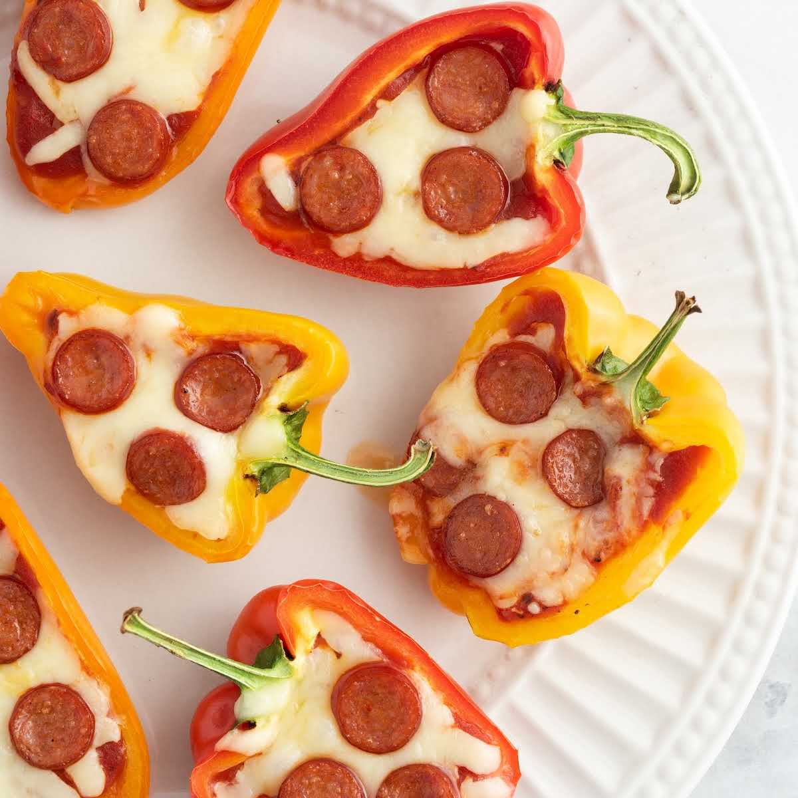

Back to main page
4-Ingredient Pepper Pizza Bites

You only need 4 ingredients for these mini pepper pizza bites.
The first thing to go whenever I host a Super Bowl party, they are crunchy, saucy, and cheesy, plus lower in carbs than traditional pizza bites.
Ingredients:
- 8 ounces mini bell peppers (about 8 peppers), sliced in half lengthwise and seeded
- 3/4 cup marinara sauce
- 1/2 cup shredded mozzarella cheese
- 1 ounce mini pepperoni slices
Directions:
- Preheat the oven to 350 degrees F (180 degrees C) and line a baking sheet with parchment.
Place sliced mini bells on the baking sheet, cut sides up.
- Divide marinara sauce between peppers using a small spoon.
Top peppers with cheese. Place 3 slices of mini pepperoni on top of cheese in each pepper.
- Bake in the preheated oven for 12 minutes.
Turn the oven's broiler to High, and broil peppers until cheese is melted and starting to brown, about 3 minutes.